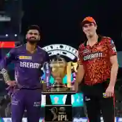
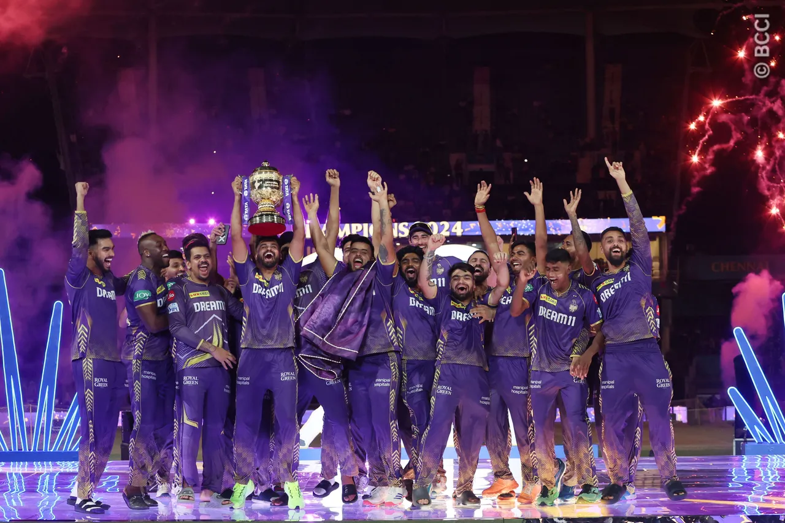
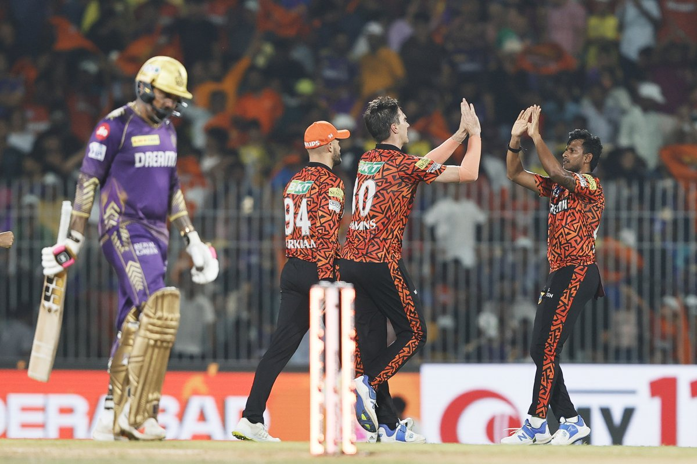

SRH 113 (18.3) KKR 114 (10.3)
KKR Won 8 by Wickets (57 balls left)
Final T20 74 of 74
Final Match :-
The IPL 2024 final match between Kolkata Knight Riders (KKR) and Sunrisers Hyderabad (SRH) was full of exciting moments, with KKR emerging victorious by 8 wickets to claim their third IPL title.
Here are some key and interesting highlights from the final match:
- Shreyas Iyer's Captaincy: KKR captain Shreyas Iyer led the team to victory with his strategic captaincy and crucial runs. His leadership on the field was pivotal in guiding KKR to the win.
- Sunil Narine's All-Round Performance: Sunil Narine delivered a standout performance with both bat and ball. He took key wickets to restrict SRH's scoring and also contributed important runs during KKR's innings.
- Spectacular Fielding : KKR's fielders displayed outstanding skills, with impressive catches and run-outs. A highlight moment was Eoin Morgan's stunning catch at the boundary, which disrupted SRH's momentum.
-
Importance of the Toss: SRH won the toss and chose to
bat first, but their innings lacked consistency and they could only
manage 113 runs.
- Celebrations and Atmosphere: After the match, KKR's players and fans celebrated in grand style. The stadium was filled with purple, and KKR fans celebrated the victory exuberantly.
These moments made the IPL 2024 final memorable and provided great excitement for cricket fans. If you want to watch the full match or highlights, they are available on JioCinema and the official IPL website.


